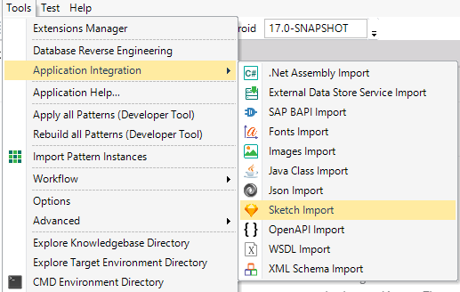
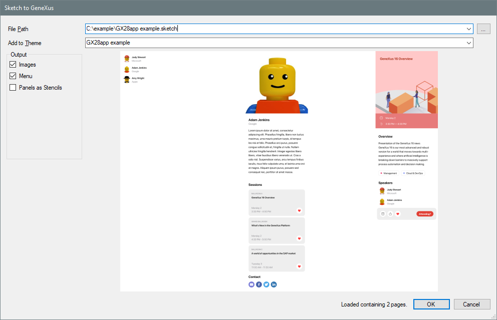
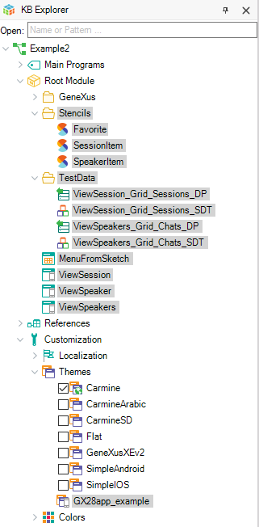
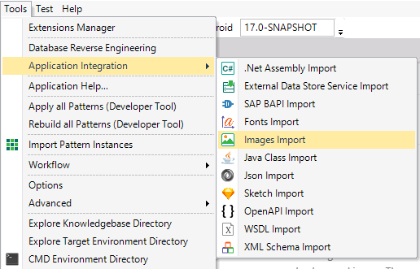
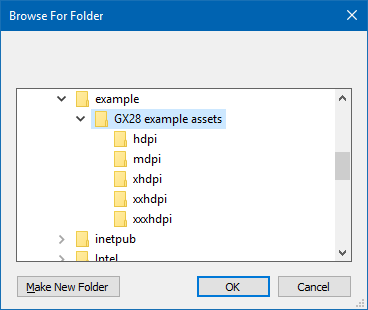
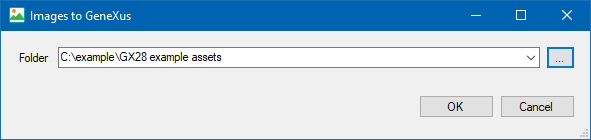
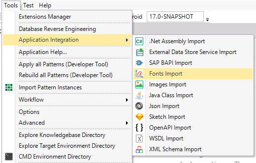
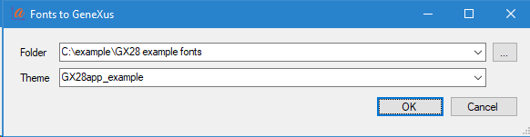

Sketch is one of the most popular tools for designing digital interfaces. We are working on integrating Sketch files automatically into GeneXus.
(State of the Art
- For Mobile: It is available since GeneXus 16 upgrade 5
- For WEB: This is an experimental feature (Beta stage), so beware!
)
Given a Sketch file, that follows the designer rules, GeneXus will create: Panels for Smart Devices, Stencils, a Theme for Smart Devices with Classes, Data Providers to fill grids with sample data and calls between panels.
You can try this feature with the sample Sketch file and its images.
Open the Sketch Import tool

Select the Sketch File (Note: The Sketch file must follow the designer rules.)

Import options:
- Add to Theme: Select the Theme for Smart Devices where the classes will be added.
- Images: import the images embedded inside the sketch file and will create placeholders for all the exported images. If you already have the images inside the KB, disable it.
- Menu: creates a dashboard named MenuFromSketch with links to all the created panels.
- Panels as Stencils: creates a Stencil to replace the main table of all created Panels. This is useful if you want to import multiple iterations of the sketch file while developing.
Import the file. You can watch the progress in the General Output Window.
Once finished you will see in the KB explorer, new objects:

Before building and running, we suggest importing the images.
Open the Images Import Window

Select the folder containing all the images


and import the images.
You can watch the progress in the General Output Window.
Once finished you can see the images in the Image Tool Window.
Open the Fonts Import Window

Select the folder containing all the fonts.
Select the theme that was created when importing the sketch file.

and import the fonts.
You can watch the progress in the General Output Window.
Once finished you can see the fonts inside the selected theme.
- Select a startup object (either a panel or the MenuFromSketch)
- Run
For the automatically imported design to look good, the sketch file must follow certain internal structure.
- Avoid overlapping elements and layers.
- If you have an element overlapping a layer, it should be inside the layer, unless it is a badge or a background of an ancestor layer.
- You can position a badge (a small layer) over, or at the edge, of another layer.
- You can give a background to a layer. it should be at the bottom and be the largest item inside the layer.
- Nothing else should overlap. Pay attention to the frames. For instance, two texts could have overlapping frames even if their content does not overlap.
- Remember to mark all images as exportable. These includes icons, logos, etc.
- All symbols are expanded to its parent width. If you want to use a symbol with fixed width, please put it inside a folder with fixed width.
- Follow Sketch's resize constraints best practices, we use resize constraints to make the design responsive.
- We give meaning to some layer names
- If a layer name starts with the word "button", it will be treated as a button.
- If a text name starts with the word "input", it will be treated as an input field.
- Lists, carousels, and grids should be inside a layerthat starts with the word "grid". If elements inside it are Symbols, we will import de the relevant data and load it dynamically. Developers will appreciate this!
- If a layer starts with "_" it will be ignored. Useful for details that must be seen in Sketch not imported to GeneXus.
- Similarly, since keyboards are not usually always visible part of panels, we ignore any folder that starts with "keyboard".
- We do not support yet complex controls like Calendar or Graphs, these will be reduced to multiple images and texts. We recommend marking them as exportable images, since it will make it clearer for the developer what needs to be replaced.
- If you are editing a Sketch file that you already shared, keep the old names of the objects. Changing them might unnecessarily create news objects inside GeneXus.
- Keep it simple! This is an experimental feature and there are many things that it doesn't support, check the Restrictions section.
- Use a Sketch version >= 52
Download the sample Sketch files and explore it.
- Color gradients are not supported.
- Avoid one text field with many formats and avoid masks with complex shapes. Keeping it simple increases the chances of your design looking good on the first try.
- When you share the sketch file, remember to send the exported images and all the fonts used.
Please help us improve, we want your feedback! Be part of the conversation in the GeneXus Beta Channel
(You can subscribe at http://www.genexus.com/betatesters)
|